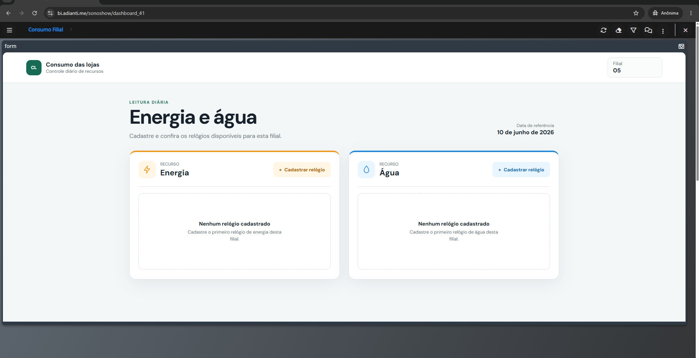
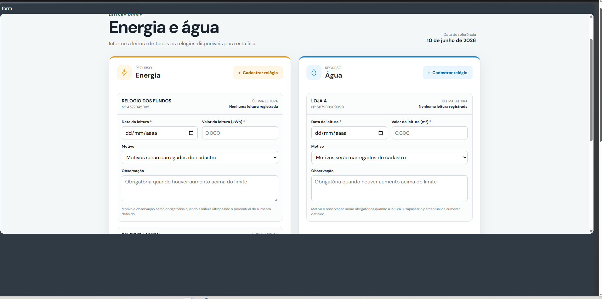
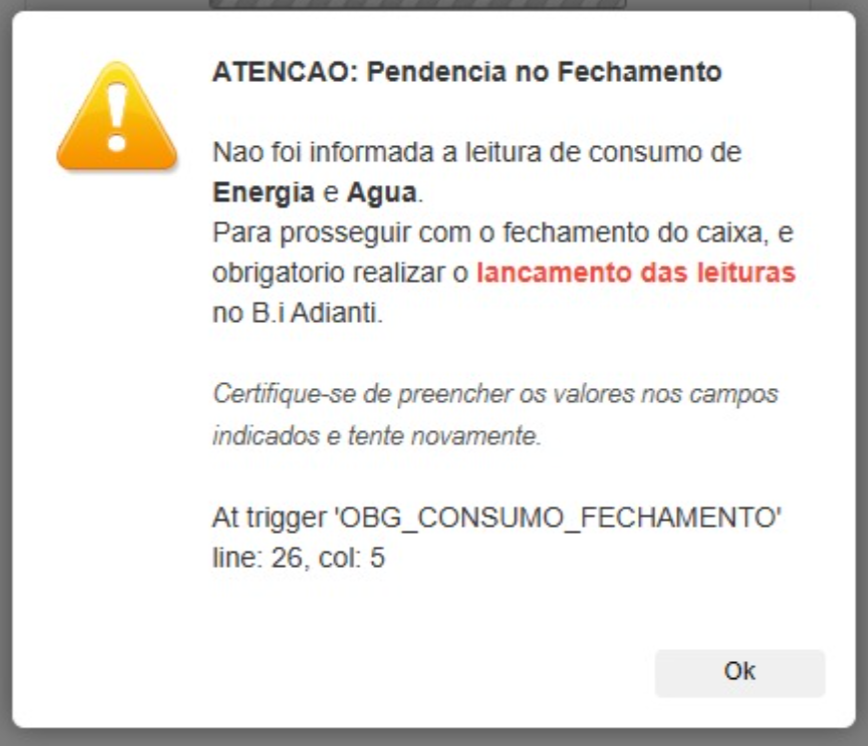

Acesso pelo B.I Adianti
A filial já é identificada automaticamente
Ao abrir o formulário dentro do B.I Adianti, não é necessário informar filial, usuário ou senha. O sistema identifica a unidade vinculada ao usuário conectado e mostra somente os relógios daquela filial.
- Acesse normalmente o B.I Adianti.
- Abra a opção de consumo da filial.
- Confira o código da filial exibido no topo do formulário.

Acesso fora do Adianti
Use o mesmo login do FDC Web
Quando o formulário for aberto fora do ambiente Adianti, será exibida uma tela de identificação. Informe o mesmo usuário e senha utilizados para acessar o FDC Web. Após a validação, o sistema encontrará sua filial.
- Não compartilhe suas credenciais.
- O acesso carregará somente a filial vinculada ao seu usuário.
- Em caso de senha inválida, confirme o acesso no FDC Web.
Acesso ao formulário
Identifique sua unidade
Entre com o mesmo usuário utilizado no FDC Web.
Tela apresentada somente quando a filial não vier identificada pelo Adianti.
Primeiro acesso
Cadastre cada relógio da filial
Use o botão Cadastrar relógio na seção correta de Energia ou Água. Cadastre todos os medidores existentes na loja.
- Informe um apelido fácil de reconhecer, como “Relógio principal”.
- Informe o número exibido no equipamento ou na conta.
- O tipo será definido automaticamente pela seção escolhida.
Novo cadastro
Cadastrar relógio de energia
Cadastre uma única vez. Depois, o relógio ficará disponível diariamente.
Rotina diária
Preencha todos os relógios ativos
Informe a data e o valor acumulado mostrado em cada relógio. Nenhum relógio ativo pode ficar sem preenchimento no envio do dia.
- A leitura informada nunca pode ser menor que a anterior.
- Envie todas as leituras juntas pelo botão ao final do formulário.
- O sistema mostra a última leitura registrada para conferência.

Atenção no fechamento
Sem leitura, o caixa não fecha
O preenchimento diário é obrigatório. Se a filial tentar fechar o caixa no FDC sem concluir as leituras de energia e água, o sistema exibirá a mensagem de pendência e bloqueará o fechamento.
- Retorne ao B.I Adianti e abra o formulário de consumo.
- Preencha todos os relógios ativos da filial.
- Envie as leituras e tente novamente o fechamento do caixa.
Não deixe para preencher após o fechamento.
